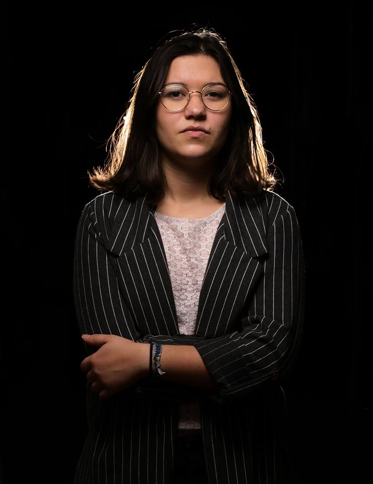

Née à Lille à l’aube du 21ème siècle, j’ai eu une appétence pour la
photographie dès mon plus jeune âge. Les voyages, les rencontres,
les cultures diverses et variées autour du monde m’ont permis de
m’ouvrir aux autres plus facilement mais m’ont aussi donné l’envie de donner la parole à ceux qui ne l’ont pas.
Après un BTS photographie au lycée Jean Rostand à Roubaix et
plusieurs stages dont un à l’AFP photo de Paris, je décide de passer
une licence professionnelle en presse de proximité à l’ESJ Lille.
Lors de cette année 2018, je remporte le prix Francois Chalais jeune reporter qui me
permet de retourner à l’AFP deux ans plus tard. J’ai ainsi pu acquérir de l’expérience
sur ces trois derniers mois et être publiée dans différents médias dont entre autres le
Monde, the Guardian, La Croix, l’Express ou encore the Atlantic sous mon nom et en
qualité de stringer.